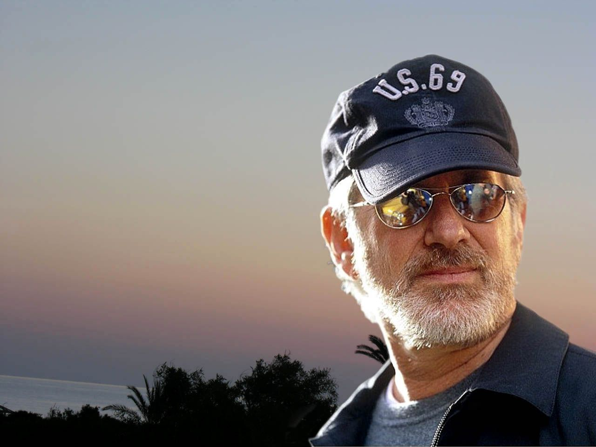
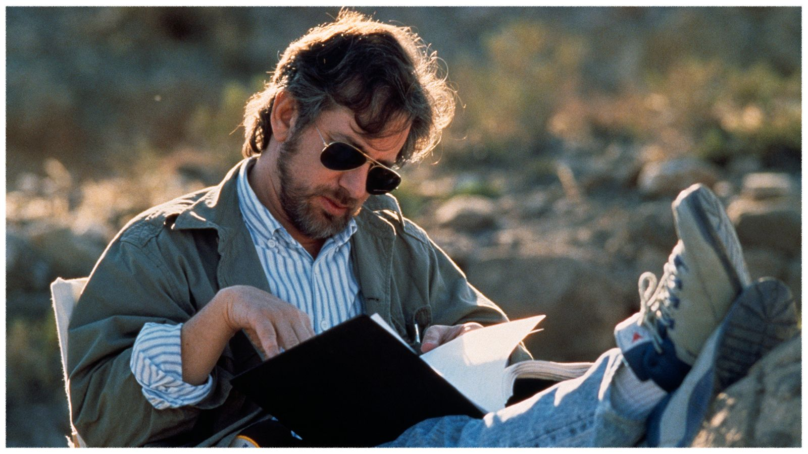
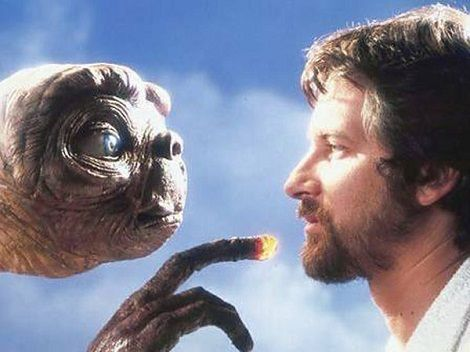
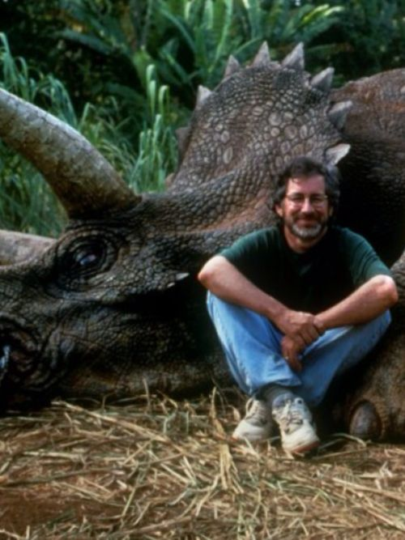
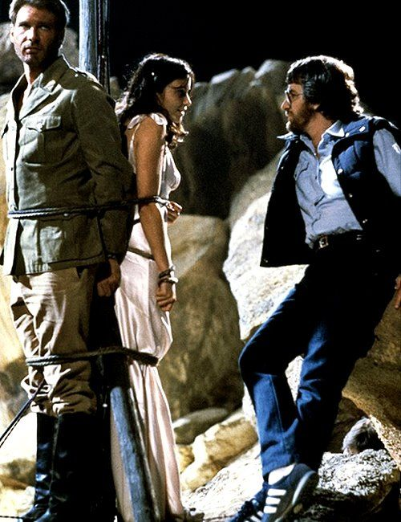
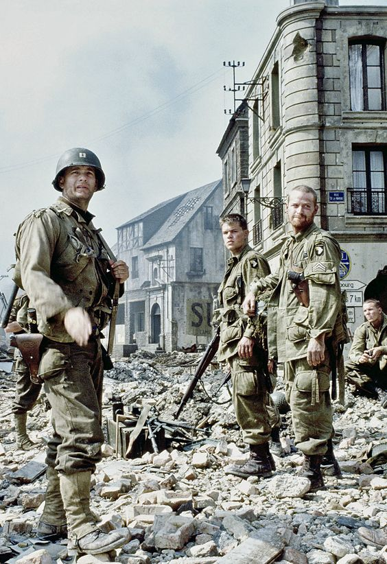

Datos generales
Steven Allan Spielberg nacido el 18 de diciembre de 1946 en Cincinnati, Ohio. Es un director, guionista y productor de cineestadounidense. Se lo considera uno de los pioneros de la era del Nuevo Hollywood y es también uno de los directores mas reconocidos y populares de la industria cinematográfica mundial.
En sus películas, Spielberg ha tratado muy diversos temas y géneros. Sus primeros filmes de ciencia ficción y aventuras, como Tiburón (1975), la franquicia de Indiana Jones y E.T., el extraterrestre(1982) son vistos como arquetipos del cine de evasión del Hollywood moderno. En años posteriores comenzó a abordar temas humanistas como el Holocausto, el comercio atlántico de esclavos, los derechos civiles y políticos, o War Horse (20111).
Candidato siete veces a los Premios Óscar en la categoría de mejor director, obtuvo el premio en dos ocasiones, con La lista de Schindler (1993) y Saving Private Ryan (1998). Tres de sus películas (Tiburón, E.T., el extraterrestre y Parque Jurásico) lograron ser las películas de mayor recaudación en su momento y se convirtieron en verdaderos fenómenos de masas.
En el mundo del espectáculo se lo conoce como «El Rey Midas de Hollywood». Según la revista Forbes, el patrimonio de Spielberg asciende a 3700 millones de dólares estadounidenses. Las ganancias de sus películas en todo el mundo, sin ajustar precios a la inflación, superan los diez mil millones de dólares, lo que convierte a Spielberg en el director de cine con mayor recaudación de la historia. De su larga asociación con el compositor John Williams han surgido algunas de las bandas sonoras más icónicas de la historia del cine.

Primeros años
Steven Spielberg nació en Cincinnati (Ohio) en una familia judía asquenazí. Su madre, Leah Adler, era pianista y restauradora y su padre, Arnold Spielberg, un ingeniero eléctrico que participó en el desarrollo de las computadoras. Pasó su infancia con su madre en Haddon Heights (Nueva Jersey) y Scottsdale, Arizona. Durante su adolescencia, Spielberg se hizo aficionado a realizar películas de 8 mm con sus amigos. El primer corto lo rodó en el restaurante Pinnacle Peak Patio, en Scottsdale. En la película se incluía la escenificación de los restos de un accidente de tren preparado con su maqueta Lionel, LLC.
En 1958, se convirtió en Scout y, para obtener la insignia del mérito, realizó un corto de 8 mm, de nueve minutos de duración, denominado The Final Duel. A los trece años, ganó un premio por una película de guerra de 40 minutos llamada Escape to Nowhere (Escape a ninguna parte), que se basaba en una batalla en el este de África. En 1964, a los dieciséis años, escribió y dirigió su primera película independiente, una aventura de ciencia ficción de 130 minutos llamada Firelight (que más tarde inspiraría a Close Encounters of the Third Kind). La película, que contó con un presupuesto de 500 dólares, se proyectó en el cine local y logró recolectar 501 dólares, lo que generó una ganancia de un dólar. También hizo varias películas sobre la Segunda Guerra Mundial, inspiradas en historias de guerra contadas por su padre.
Después del divorcio de sus padres, se trasladó con su padre a Saratoga (California), mientras que sus tres hermanas y su madre permanecieron en Arizona. Asistió a la Escuela Secundaria Arcadia en Phoenix durante tres años y se graduó en la Saratoga High School en Saratoga en 1965. Fue durante este tiempo cuando alcanzó el rango de Eagle Scout.
luego de mudarse a California, presentó una solicitud para asistir a la escuela de cine University of Southern California Escuela de Teatro, Cine y Televisión en tres ocasiones, pero no tuvo éxito. Posteriormente fue estudiante de la California State University, Long Beach, donde fue miembro de la fraternidad Theta Chi. En 1994, la USC le otorgó el doctorado Honoris Causa y en 1996 se convirtió en miembro del consejo de la universidad. Su verdadera carrera comenzó cuando ingresó en Universal Studios como pasante no remunerado, empleado siete días a la semana como colaborador del departamento de edición. Hizo su primer cortometraje para su presentación en salas, con la película Amblin' (1968), de 26 minutos de duración, cuyo título Spielberg mas tarde utilizó para dar nombre a su productora, Amblin Entertainment.

Carrera como director
Decada de 1970
Tras ser contratado por la división televisiva de la productora Universal, (que según la leyenda, ocurrió tras ser sorprendido una noche mientras rondaba por los decorados de los estudios), empezó a dirigir episodios de series como Marcus Welby, M.D. (1969-1976) y Columbo (1971-2003), pero el inesperado éxito de la versión para el cine de su telefilme Duel (El diablo sobre ruedas, 1971) lo llevó a estrenar en 1974 su primer largometraje, The Sugarland Express (Loca evasión). Si bien no fue dado a conocer en mayor grado internacional hasta la posterior exitosa carrera del director, la película tuvo su éxito de crítica (tiene un 92 % en Rotten Tomatoes) y de taquilla. La Universal depositó en él la confianza suficiente como para rodar Jaws (Tiburón, 1975), película de gran presupuesto y rodaje extremadamente accidentado que se convirtió en uno de los títulos más taquilleros de la historia e instauró el modelo moderno de superproducción, con elevados costes de mercadotecnia y efectos especiales. Más tarde, en 1977, George Lucas contribuyó a consolidar las bases del nuevo "cine comercial" con su ópera espacial Star Wars (La guerra de las galaxias). Desde entonces, Spielberg y Lucas mantienen una gran amistad.
Spielberg rechazó dirigir Tiburón 2, King Kong y Superman: la película, para desarrollar aquella historia que había escrito en su adolescencia. Así, en 1977, estrenó Close Encounters of the Third Kind, que fue un gran éxito y lo consolidó como el nuevo «rey Midas» del cine de Hollywood. En 1979 llegaría la poco conocida 1941, un intento por incursionar en la comedia que fue un fracaso. Según palabras de Lucas: "La dirección de Steve fue brillante; la idea, terrible”.
Decada de 1980
Como amantes de las viejas películas de aventura de los años 20 y 30 de Hollywood, Lucas le propuso a Spielberg escribir una historia con un aventurero arqueólogo como protagonista. El director aceptó el reto, y entre todos los actores eligió a Harrison Ford, quien le había encantado en su rol de Han Solo en The Empire Strikes Back. Por esa misma razón Lucas se negó, en un principio, pero finalmente el actor consiguió el papel, que lo impulsó hasta la cúspide de su carrera al interpretar al Dr. Indiana Jones. Raiders of the Lost Ark (1981) estuvo cargada de problemas, pero se convirtió en uno de los mayores éxitos de la década y revitalizó el olvidado género de aventuras.
Mientras rodaba esa película, Spielberg decidió retomar el tema que más le fascinaba, el espacio y sus habitantes. Y por eso tras terminar con la aventura del Dr. Jones, se abocó inmediatamente a lo que, para muchos, es su obra maestra. En 1982, E.T., el extraterrestre se convirtió en la película más taquillera de todos los tiempos, superando a Star Wars (1977), y cuyo reinado mantuvo hasta que en 1993 la desplazó Jurassic Park, también dirigida por él. Mostrando a uno de los extraterrestres más querido por el público de todo el mundo, Spielberg se alzó definitivamente como uno de los más grandes cineastas de su época, e incluso de la historia del cine. El director de Gandhi (1982), Richard Attenborough, declaró: «Yo estaba seguro de que no únicamente E.T. podría ganar, sino de que ganaría. Fue inventiva, poderosa, y maravillosa. Yo hago películas más mundanas». Tras esta película llegaría la precuela de Indiana Jones, Indiana Jones and the Temple of Doom (1984), que sería un poco más agridulce que la primera parte. A partir de ese momento, alternó su faceta de productor con la de director, con mayor éxito en la primera (Gremlins de 1984 y Back to the Future de 1985) que en la segunda. Si bien sus siguientes películas no fueron fracasos, El color púrpura (1985), Empire of the Sun (1987) y Always (1989) se alejaron bastante de lo que fueron sus proyectos anteriores.
Tras tres películas que dejaron mucho que desear para la crítica y la taquilla (aunque no fueron consideradas «malas»), Spielberg volvería para fin de año con la tercera parte del aventurero que hizo famoso a Harrison Ford. Indiana Jones y la última cruzada (1989) fue un éxito, con la incorporación de Sean Connery como el padre de Indiana Jones. Para los fanáticos de la saga es posiblemente la mejor y más completa de todas.
Decada de 1990
En 1991, decidió abordar un tema de su infancia. Es reconocido su fanatismo por los clásicos de Disney que vio en su niñez, pero preferentemente por la historia de Peter Pan. Y aunque su versión de la historia original que quería filmar con actores de carne y hueso no pudo hacerse (pero se puede encontrar un guiño a la historia en E.T., cuando Mary le lee el cuento a Gertie, y E.T. las observa), si consiguió estrenar su propia versión, que sería una continuación a la historia conocida por todos. Michael Jackson iba a ser Peter Pan, originalmente, pero por diversos inconvenientes el papel recayó en el comediante Robin Williams. Hook fue un éxito, aunque no gozó de la popularidad que tuvieron otras de sus películas.
En 1993, Spielberg continuó con su tendencia de estrenar, algunos años, dos películas al mismo tiempo (tendencia que inició en 1989 y repetiría en 1997, 2002, 2005 y 2011). La primera de ellas fue Jurassic Park, que revolucionó los efectos especiales en los años 90 (como algunas otras contemporáneas). También de 1993 es La lista de Schindler por la que recibiría el reconocimiento por parte de la Academia y de los Premios Óscar. Gracias a este film fue reconocido como Mejor Director y ganó Mejor Película (habiendo sido nominado 3 veces anteriormente al primer premio).
En 1997 estrenó Amistad y The Lost World: Jurassic Park, secuela de la entrega de 1993, y que sería la última de la franquicia con Spielberg como director (aunque no dejó sus funciones de productor). Al año siguiente eligió regresar a las historias de la Segunda Guerra Mundial (tema recurrente como director y productor, tanto en películas como series y videojuegos), con Saving Private Ryan, que le valió su segundo Óscar al mejor director.
Decada de 2000
A.I. Inteligencia artificial (2001) fue otra de sus películas cuestionadas por los tres grandes entes del cine: la taquilla, la crítica y la audiencia pese a ser una obra ciencia ficción como testamento y homenaje a Stanley Kubrick. Al año siguiente estrenó Catch Me If You Can (2002), con Leonardo DiCaprio y Tom Hanks. En ese mismo año también estrenó Minority Report. En 2004, Spielberg volvió a entregarle el protagónico a Hanks, esta vez en The Terminal.
Llegando con otro año de dos películas, Spielberg fue vapuleado por la crítica, por un lado, y por los fans, por otro. Primero con Múnich (2005), que retrató el atentado terrorista palestino (conocido como Masacre de Múnich) en los Juegos Olímpicos de Múnich 1972. Como ya se dijo, él es judío, pero, aun directamente implicado en uno de los dos bandos beligerantes, estuvo muy cerca de una visión salomónica. La película no gustó a ninguna de las dos partes: los judíos le pusieron en su lista negra y a los propalestinos esa equidad es precisamente lo que les molestó. Para ellos hay un opresor y un oprimido, y por tanto no es justo tratar al invasor y al invadido por igual. Spielberg se defendió de esas críticas diciendo: "Si fuera necesario, estaría dispuesto a morir, tanto por Estados Unidos como por Israel".
A su vez, ese mismo año, estrenó La guerra de los mundos (2005), que para muchos fue una increíble película que retrata la versión de Orson Welles, pero para los defensores de este último y los fanáticos de la versión original, la de Spielberg no se encontró a la misma altura. Lucas convenció a Spielberg de volver con la retrasada cuarta entrega de Indiana Jones. Bastante cuestionada antes de su estreno, Indiana Jones y el reino de la calavera de cristal (2008) no recibió tan malas críticas. Roger Ebert la calificó con 3.5 estrellas de un total de 4, argumentando "Puedo decir que si te gustaron las otras películas de Indiana Jones, seguramente ésta te gustará también. Si no te gustaron, entonces no nos estamos entendiendo”. James Berardinelli proporcionó a la película 2 estrellas de 4, mencionando "la maldición más prudente ha dejado a los aficionados con sus memorias únicamente”.
Decada de 2010
En 2011 estrenó dos películas, primero Las aventuras de Tintín: el secreto del Unicornio, celebrada por su gran animación por captura de movimiento (o "captura de actuación"), pero ignorada en gran medida en la ceremonia de los Óscar (solo consiguió una nominación a Mejor Banda Sonora), pero ganando el Globo de Oro a la Mejor Película Animada.
Ha sido un ávido seguidor de Las aventuras de Tintín, que descubrió en 1981 cuando un artículo comparó Raiders of the Lost Arkcon Tintín. Su secretario le compró las ediciones en francés de cada libro. Mientras tanto, el creador del cómic, Hergé, que odiaba a las anteriores versiones cinematográficas en imagen real o en dibujos animados, se convirtió en un fan de Spielberg. Michael Farr, autor de Tintín: Complet Companion, recordó que Hergé "pensaba que Spielberg era la única persona que podría hacer justicia a Tintín". Spielberg y su socia productora Kathleen Kennedy de Amblin Entertainment tenían previsto reunirse con Hergé en 1983, pero el autor murió esa semana, decidiendo su viuda darles los derechos. Pero no fue hasta su encuentro con Peter Jackson que por fin el proyecto comenzó a prepararse. Jackson, quien había estado durante mucho tiempo fascinado con el cine en 3-D, quedó impresionado por los avances recientes en el formato. Spielberg y Jackson se pusieron de acuerdo en que una adaptación en imagen real no haría justicia a los libros de historietas y que la animación sería la mejor manera de representar el mundo de Tintín.
También en 2011, estrenó otra película bélica, situada en la Primera Guerra Mundial, War Horse. En 2012, Spielberg estrenó Lincoln, la película sobre el prócer norteamericano.
En 2014, anunció que estaba trabajando en una serie sobre Halo junto con 343 Industries, disponible para los usuarios premium de Xbox Live, solamente a través de una Xbox One.
Peliculas
E.T., el extraterrestre
Considerada una de las mejores peliculas de todos los tiempos, esta obra del director Steven Spielberg, fue escrita por Melissa Mathison, y protagonizada por Henry Thomas, cuya fecha de estreno fue el 11 de junio de 1982 por Universal Pictures.
Cabe destacar que, la idea original que inspiro a spielberg para crear a E.T aun es incroncreta, ya que a lo largo de los años, ha sido cuestionada por diversos escritores, entre ellos se encuentra el Prof. Dr. Louis Brookman, quien luego de una larga charla con Drew Barrymore (ahijada de Steven Spielberg), este concluyo lo siguiente:
“Mi teoría es que la película de Steven Spielberg “ET – The Extra-Terrestrial” es una especie de adaptación de su propia infancia, y la figura de los tallos extraterrestres de esa época, específicamente de una pintura de Joan Miró que Spielberg vio en el Guggenheim en Nueva York.”

Jurassic Park
Una película estadounidense de ciencia ficción y aventuras estrenada en 1993. Conocida por su traducción al español como Parque jurásico. Fue dirigida por Steven Spielberg y producida por Kathleen Kennedy y Gerald R. Molen.

Amistad
Otros de los proyectos de Steven Spielberg que llego a los cines en el año 1997, en solicitud de los estudios DreamWorks; inspirada en hechos reales, esta historia cuenta la travesía de un grupo de esclavos africanos amotinados en su viaje desde Sierra Leona, a bordo de una embarcación comandada por un grupo de españoles, rumbo hacia la isla de Cuba, en julio del año 1839.
He de señalar que el largometraje incurre en alguna incorrección cronológica como el hecho de que Martin Van Buren ya no era presidente de los EE. UU., cuando se produjo el fallo del Tribunal Supremo.
Indiana Jones
Es una franquicia del cine estadounidense producida por George Lucas a partir del año 1973, compuesta por un total de 4 peliculas ya estrenadas las cuales se conocen como: Raiders of the Lost Ark (1981), Indiana Jones and the Temple of Doom (1984), Indiana Jones y la última cruzada (1989) e Indiana Jones y el reino de la calavera de cristal (2008).
He de señalar que en cada una de ellas, el puesto del director fue ocupado Steven Spielberg, y el papel del protagonista por Harrison Ford.

Always
Es una película del genero drama romántico, dirigida por Steven Spielberg en 1989; protagonizada por Richard Dreyfuss , Holly Hunter , John Goodman , Brad Johnson y Audrey Hepburn en su último papel cinematográfico.
Avatar
Es una película de ciencia ficción dirigida, escrita, producida y coeditada por James Cameron, y protagonizada por Sam Worthington, Zoe Saldana , Stephen Lang , Michelle Rodríguez, y Sigourney Weaver .
El escenario de la historia se desarrolla a mediados del siglo 22, cuando la población humana decide colonizar una exuberante luna habitable de un gigante gaseoso en el sistema estelar Alpha Centauri, llamada Pandora , para extraer un mineral superconductor a temperatura ambiente, denominado nobtanio.
War Horse
Conocida como Caballo de batalla en España y Caballo de guerra en Latinoamérica; es una película británico-estadounidense dirigida por Steven Spielberg y estrenada en el 2011.
Protagonizada por Jeremy Irvine, David Thewlis, Tom Hiddleston, Benedict Cumberbatch, Emily Watson, Eddie Marsan, Toby Kebbell, David Kross y Peter Mullan. Esta película esta basada en la novela juvenil del mismo título escrita por el británico Michael Morpurgo, publicada en el año 1982.

Amblin
Escrita y dirigida por Steven Spielberg, publicado el 18 de diciembre de 1968, como película cinematográfica de 26 minutos de duración, la cual no llego a proyectarse en cines comerciales; Sin embargo en cierto modo, el cortometraje fue el comienzo de una exitosa carrera como director y que empezaría a desempeñar pocos años después, y hasta la actualidad, en el mundo del cine, como una de los mayores estudios de producción cinematográfica.
La lista de Schindler
Es una película dramática e histórica del cine estadounidense de 1993, basada en la novela “El arca de Schindler” del escritor australiano Thomas Keneally, inspirada en los desencadenantes eventos de la Revolución Rusa.
Dirigida y coproducida por Steven Spielberg y con guion de Steven Zaillian, esta historia esta protagonizada por Liam Neeson como Schindler, Ralph Fiennes como el oficial de las SS Amon Göth y Ben Kingsley como el contable judío Itzhak Stern., cuyo exito de estreno causo tanta impresión entre sus espectadores, que a menudo era incluida en los listados de mejores películas de la historia
Premios y nominaciones
El director Steven Spielberg ha sido nominado en 13 oportunidades a los aclamados premios Oscar, de los cuales ha sido galardonado con solo 4 de ellos.
A continuación les presento un listado de sus respectivas nominaciones en orden cronológico:
1978: Nominado a la categoría: Mejor director; por su trabajo: Close Encounters of the Third Kind
1982: Nominado a la categoría: Mejor director; por su trabajo: Raiders of the Lost Ark
1983: Nominado a las categorías: Mejor película y Mejor director, por su trabajo: E.T. the Extra-Terrestrial
1986: Nominado a la categoría: Mejor película, por su trabajo: The Color Purple
1987: Ganador del premio Oscar en Memoria de Irving Thalberg
1994: Ganador del premio Oscar, en las categorías: Mejor película y Mejor director, por su trabajo: Schindler’s List
1999: Ganador del premio Oscar, en la categoría: Mejor director, y Nominado a la categoría: Mejor película, ambos casos, por su trabajo: Saving Private Ryan
2006: Nominado a las categorías: Mejor película y Mejor director, por su trabajo: Múnich
2007: Nominado a la categoría: Mejor película, por su trabajo: Letters from Iwo Jima
2012: Nominado a la categoría: Mejor película, por su trabajo: War Horse
2013: Nominado a las categorías: Mejor película y Mejor director, por su trabajo: Lincoln
2016: Nominado a la categoría: Mejor película, por su trabajo: Bridge of Spies
2018: Nominado a la categoría: Mejor película, por su trabajo: The Post
[H3]Filmografia[/H3]
• 2017 Ready Player One
• 2017 The Post
• 2016 The BFG
• 2015 Bridge of Spies
• 2012 Lincoln
• 2011 War Horse
• 2011 The Adventures of Tintin: Secret of the Unicorn
• 2008 Indiana Jones and the Kingdom of the Crystal Skull
• 2005 War of the Worlds
• 2004 The Terminal
• 2002 Minority Report
• 2002 Catch Me If You Can
• 2001 A.I.: Artificial Intelligence
• 2001 Jurassic Park III
• 1998 The Mask of Zorro Productor
• 1998 Saving Private Ryan
• 1998 Deep Impact Productor
• 1997 The Lost World: Jurassic Park
• 1997 Men in Black Productor
• 1997 Amistad
• 1996 Balto [anim] Productor
• 1996 Twister Productor
• 1995 Zoo Productor
• 1995 Casper Productor
• 1994 The Flintstones Productor
• 1993 Schindler's List
• 1993 We're Back! A Dinosaur's Story [anim] Productor
• 1993 Jurassic Park
• 1992 A Wish for Wings That Work [anim] Productor
• 1991 An American Tail: Fievel Goes West [anim] Productor
• 1991 Tiny Toons Adventures: How I Spent My Vacation [anim] Productor
• 1991 Hook
• 1991 Cape Fear Productor
• 1990 Joe Versus the Volcano Productor
• 1990 Back to the Future 3 Productor
• 1990 Arachnophobia Productor
• 1990 Rollercoaster Rabbit Productor
• 1990 Gremlins 2: The New Batch Productor
• 1989 Amazing Stories: The Movie 2 [TV]
• 1989 Amazing Stories: The Movie 1 [TV]
• 1989 Always
• 1989 Indiana Jones and the Last Crusade
• 1989 Honey, I Shrunk the Kids Productor
• 1989 Back to the Future Part II Productor
• 1989 Dad Productor
• 1988 Who Framed Roger Rabbit? Productor
• 1988 The Land Before Time [anim] Productor
• 1987 Innerspace Producer
• 1987 Harry and the Hendersons Productor
• 1987 Empire of the Sun
• 1987 * batteries not included Productor
• 1986 An American Tail [anim] Productor
• 1986 Amazing Stories, Book 3 [TV] Productor
• 1986 The Money Pit Productor
• 1986 Amazing Stories, Book 2 [TV] [anim] Productor
• 1985 Amazing Stories, Book 1 [TV]
• 1985 Back to the Future Productor
• 1985 The Goonies Productor
• 1985 Amazing Stories, Book 1 [TV]
• 1985 The Color Purple
• 1985 Young Sherlock Holmes Productor
• 1985 Amazing Stories, Book 5 [TV] Productor
• 1985 Amazing Stories, Book 4 [TV] Productor
• 1984 Indiana Jones and the Temple of Doom
• 1984 Gremlins Productor
• 1983 Twilight Zone: The Movie
• 1982 Poltergeist Productor
• 1982 E.T. The Extra-Terrestrial
• 1981 Continental Divide Productor
• 1981 Raiders of the Lost Ark
• 1980 Used Cars Productor
• 1979 1941
• 1978 I Wanna Hold Your Hand Productor
• 1977 Close Encounters of the Third Kind
• 1975 Jaws
• 1974 The Sugarland Express
• 1973 Savage [TV]
• 1971 Duel [TV]
• 1971 Columbo: Murder by the Book [TV]
• 1971 Something Evil [TV]
• 1969 Night Gallery [TV]